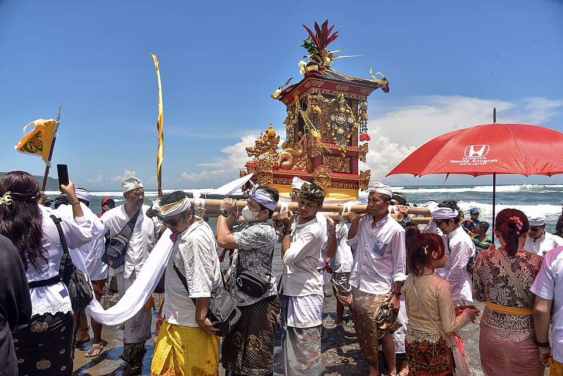

Gulir untuk Menjelajah
PENGENALAN
Kata Pengantar

Selamat datang di website mengenai Upacara Melasti. Website ini dibuat sebagai media pembelajaran untuk memperkenalkan salah satu tradisi suci umat Hindu di Bali, yaitu Upacara Melasti.
Melalui website ini, pembaca dapat mempelajari pengertian, sejarah, makna, tahapan pelaksanaan, serta nilai-nilai budaya dan spiritual yang terkandung dalam Upacara Melasti menggunakan bahasa yang sederhana dan mudah dipahami.
Kami berharap website ini dapat menambah wawasan serta meningkatkan rasa menghargai keberagaman budaya Indonesia, khususnya tradisi yang masih terus dilestarikan hingga saat ini.

PENGERTIAN
Apa Itu Melasti?
Upacara Melasti merupakan salah satu upacara suci umat Hindu yang dilaksanakan beberapa hari sebelum Hari Raya Nyepi. Upacara ini bertujuan untuk menyucikan diri, alam, dan segala sarana persembahyangan dengan cara menghaturkan persembahan di sumber air suci, seperti laut, danau, atau mata air.
Dalam kepercayaan Hindu, air dipercaya sebagai simbol kehidupan dan kesucian. Oleh karena itu, Melasti menjadi lambang pembersihan lahir maupun batin agar umat dapat memasuki Hari Raya Nyepi dengan hati yang bersih dan damai.
TUJUAN
Mengapa Melasti Dilaksanakan?
Upacara Melasti dilaksanakan sebagai persiapan menyambut Hari Raya Nyepi. Melalui upacara ini, umat Hindu memohon penyucian diri dari segala pikiran, perkataan, dan perbuatan yang kurang baik agar dapat memasuki Tahun Baru Saka dengan hati yang bersih.
Selain menyucikan diri, Melasti juga menjadi bentuk penghormatan kepada alam sebagai sumber kehidupan. Tradisi ini mengajarkan bahwa manusia harus hidup selaras dengan lingkungan serta menjaga keseimbangan antara manusia, alam, dan Tuhan.

TAHAPAN
Tahapan Upacara Melasti
Persiapan
Umat Hindu mempersiapkan pratima, sarana upacara, dan berbagai perlengkapan persembahyangan sebelum berangkat menuju tempat pelaksanaan Melasti.
Perjalanan Menuju Sumber Air
Iring-iringan umat menuju laut, danau, atau mata air yang dianggap suci sebagai tempat pelaksanaan upacara.
Persembahyangan
Pemangku memimpin doa bersama sebagai bentuk penghormatan kepada Ida Sang Hyang Widhi Wasa serta memohon penyucian.
Penyucian
Air suci digunakan sebagai simbol pembersihan lahir dan batin bagi umat serta penyucian berbagai pratima dan sarana upacara.
Kembali ke Pura
Setelah seluruh rangkaian selesai, umat kembali ke pura sambil membawa pratima yang telah disucikan untuk persiapan Hari Raya Nyepi.